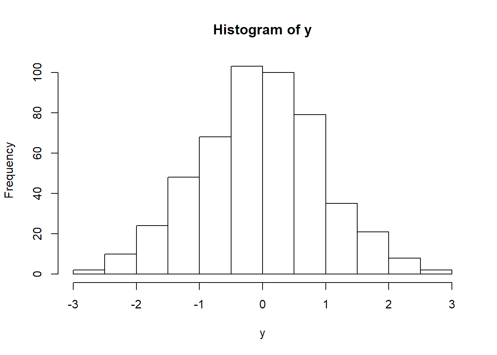
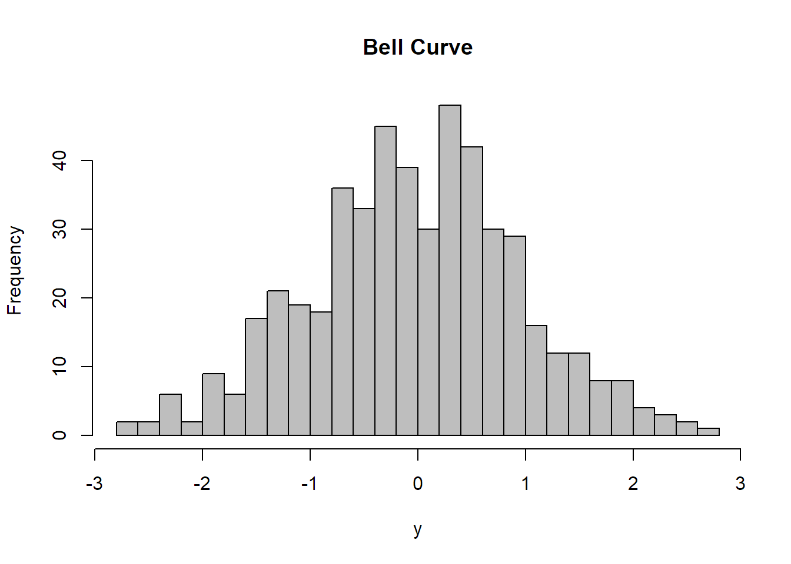
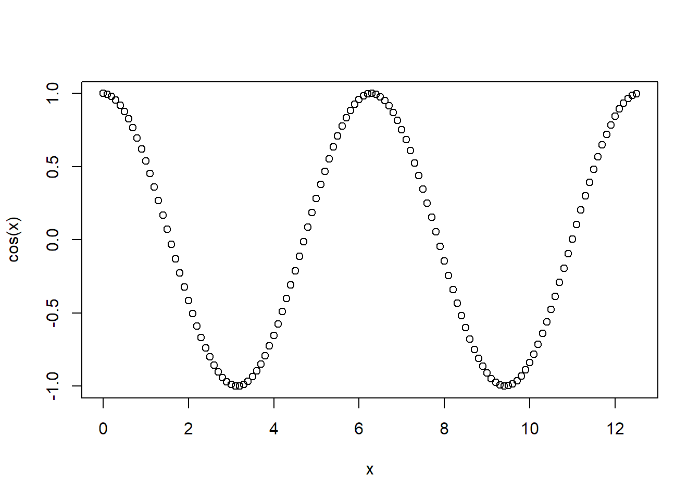
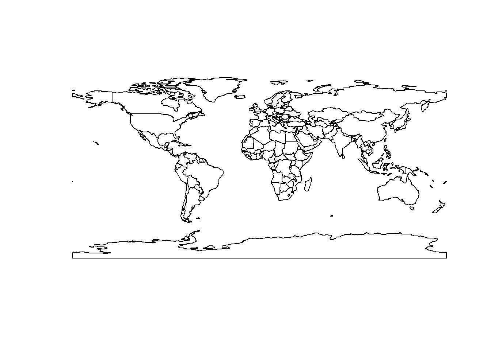

2 + 3
56 / 5
2 ^ 3
(4 + 5) * 7
sin(pi / 2)☞ When it comes to math expressions, R works a lot like Excel
☞ R generally ignores white space
x = 3 + 4
x
shoe_size = 9.5
shoe_size
Shoe_Size☞ Variable names can be long
☞ Avoid using special characters in your name
data1 works. 1data doesn't.☞ Variable names are case sensitive
sqrt(125)
round(x=3.14159, digits=2)
runif()
runif(n=10)
y= seq(from=20, to=40, by=2)
y
palette()☞ All functions require parentheses ()
☞ Some functions require you to put arguments in the parentheses, some don't
☞ Multiple arguments have to be separated by commas
☞ R functions can return more than one element
☞ R variables can store more than one element (aka vector)
☞ Use the up & down arrow keys to bring back your history
?round
help(seq)
help(package="stats")
browseVignettes("raster")☞ All functions have a help page
☞ Many packages have a help page
☞ Many packages have tutorials or workflow examples in Vignettes
Install the leaflet package
☞ you can install packages in RStudio using the Packages tab ☞ you have to install (download) packages before you can use them
Copy-paste the following into a new script.
# Happy Saint Patricks Day!
plot(NULL, xlim=c(-1,1), ylim=c(-2,1), axes=FALSE, asp=1, xlab="", ylab="")
x <- seq(from=-2, to=0, by=0.1)
y <- -(1/8) * x^2 - 0.01
points(-1*y,x,type="l", col="darkgreen", lwd=4)
theta <- seq(from=0, to=2*pi, by=0.05)
r <- sin(2*theta) + 0.25 * sin(6*theta)
points(x = r * cos(theta), y = r * sin(theta), type="l", col="darkgreen", lwd=3)☞ You can write code in a script to save and reuse it
☞ Execute code line-by-line by clicking the Run button or ctrl+enter
☞ Any line that starts with '#' is interpreted as a comment and ignored
Let's make an interactive map using the leaflet package. Copy the following into a script and run it.
# Let's make an interactive map of a sample dataset of earthquakes
library(leaflet)
m = leaflet(quakes) %>% addTiles() %>% addMarkers(~long, ~lat)
m☞ R comes with some sample datasets (like quakes)
☞ Before you can use an installed package, you have to load it into memory using library() ☞ Learn more about leaflet from RStudio or this UC Berkeley workshop.
y = rnorm(500)
hist(y)
hist(y, breaks=20, col="grey", main="Bell Curve")
x = seq(from=0, to=4*pi, by=0.1)
plot(x, cos(x))
library(sp)
library(rnaturalearth)
plot(countries110)
☞ R has a number of basic, built-in plotting functions
☞ most plotting functions have optional arguments to cumtomize the look
☞ when you pass text to a function, you have to enclose it in quotes
☞ there are packages which provide more plotting options